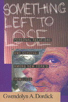

<body bgcolor="#FFFFFF" text="#000000" link="#0000FF" vlink="#CC0000" alink="#CC0000"><center><hr width="350" size="1" align="center" noshade>A rare in-depth look at how homeless people construct their social worlds<hr width="350" size="1" align="center" noshade><p><a href="https://cdcshoppingcart.uchicago.edu/Cart/ChicagoBook.aspx?ISBN=9781566395137&&PRESS=temple" target="_top">Buy this book!</a> | <a href="https://cdcshoppingcart.uchicago.edu/Cart/Cart.aspx?PRESS=temple" target="_top">View Cart</a> | <a href="https://cdcshoppingcart.uchicago.edu/Cart/Cart.aspx?PRESS=temple" target="_top">Check Out</a></p><p></p></center><!--none//--><h1>Something Left to Lose</h1>
<H2>Personal Relations and Survival among New York's Homeless</H2>
<h3>Gwendolyn A. Dordick</h3>
<P>cloth 1-56639-513-5 $79.50, Apr 97, <FONT COLOR=#990033>Available</FONT>
<br>paper 1-56639-514-3 $28.95, Apr 97, <FONT COLOR=#990033>Available</FONT>
<BR> 224 pp
5.5x8.25
</P><h3 align="center"><P><font color="#996633">Outstanding Academic Title, <i>Choice</i>,
1997</font></P>
</H3>
<p>Homelessness is usually discussed in terms of its origins or in terms of its amelioration. Media accounts focus on poverty, drug use, lack of shelter, the social safety net, or attempts by the homeless, social service agencies, and government to end homelessness by policy and direct action. Yet we never seem to get a clear picture of who the homeless are. We are exposed to them as a <i>social problem, </i>but we learn little about their daily existence.
<p>In <i>Something Left to Lose, </i>Gwendolyn A. Dordick gives us a dramatic portrait of the social and personal lives of the homeless. Through her extensive "hanging out" with homeless people, Dordick came to a profound understanding of the web of relationships that provides complex social structure in situations where, to the casual eye, there appears to be only chaos and paralysis.
<p>The author shows us that improvising shelter means working hard to co-exist with others. Lacking conventional private dwellings, the homeless find or create shelter in unconventional places&#151on street corners adjoining bus stations, on empty lots of land, or in shelters, public or private&#151and negotiate the rules of these places with authorities, passersbys, and fellow homeless.
<p>The different environments lead to quite different social relations. The Armory, for example, is a frightening place, thanks to the authoritarian attitudes of the employees and cliques of homeless people in charge. In the Shanty, on the other hand, the difficult issues are those of a self-governing community concerned about safety&#151controlling the drug use of some residents, deciding who is allowed to tap into the electricity, and worrying about intruders.
<p>In all settings, daily life for people without homes, like daily life for people with homes, is full of the concerns of personal relationships. How will we share our goods and emotions, speak respectfully to each other, love and joke and work out our disputes, and act in a trustworthy fashion?
<p>This book is also a miniature research odyssey, complete with moments of fear, frustration, blunders, distrust, and trust. In order to gather these interviews, Dordick had to not only win the confidence of the homeless people she visited (the women at the Station thought she was interested in their boyfriends) but also negotiate with unsympathetic police and shelter employees or defy them.
<BR>&nbsp;<h2>Reviews</h2>
<p><i>"</i>Something Left to Lose<i> contributes to the sociological understanding of homelessness by examining improvisation among the denizens of four distinct niches in Manhattan's homeless topography.... Dordick has produced a sympathetic but unromantic account of social improvisation among the homeless."</i>
<br>&#151<b><i><a href="../reviews/1264_review.html">Social Forces</a></i></b>
<BR>&nbsp;<h2>Contents</h2><P>
<p>Preface
<p><b>Part I: On the Streets</b>
<br>1. "Your Word Is Your Bond": The Station
<br>2. "Kindness for Weakness": The Shanty
<p><b>Part II: In the Shelters</b>
<br>3. More than Refuge: The Armory
<br>4. "Stinkin’ Thinkin’": The Private Shelter
<p><b>Part III: From a Distance</b>
<br>5. Conclusion
<p>Notes
<br>Index
</P><BR>&nbsp;<H2>About the Author(s)</H2>
<P><B>Gwendolyn A. Dordick</B> is Assistant Professor of Sociology at Hamilton College, New York.</P>
<BR><H2>Subject Categories</H2>
<p><A HREF="/tempress/urban.html" TARGET="_top">Urban Studies</a>
<BR><A HREF="/tempress/sociology.html" TARGET="_top">Sociology</a>
</p>
<p align="center"><a href="https://cdcshoppingcart.uchicago.edu/Cart/ChicagoBook.aspx?ISBN=9781566395137&&PRESS=temple" target="_top">Buy this book!</a> | <a href="https://cdcshoppingcart.uchicago.edu/Cart/Cart.aspx?PRESS=temple" target="_top">View Cart</a> | <a href="https://cdcshoppingcart.uchicago.edu/Cart/Cart.aspx?PRESS=temple" target="_top">Check Out</a></p><p><font face="Arial" size="1"><a href="copyright.html" onMouseOver="window.status='Web Copyright Policy';return true;" onMouseOut="window.status=''" title="Web Copyright Policy">&copy;</a> 2015 <a href="http://www.temple.edu" target="new" onMouseOver="window.status='Link to Temple University home page';return true;" onMouseOut="window.status=''" title="Link to Temple University home page">Temple University</a>. All Rights Reserved. http://www.temple.edu/tempress/titles/1264_reg.html</font></p>